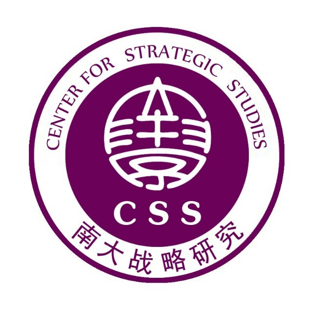
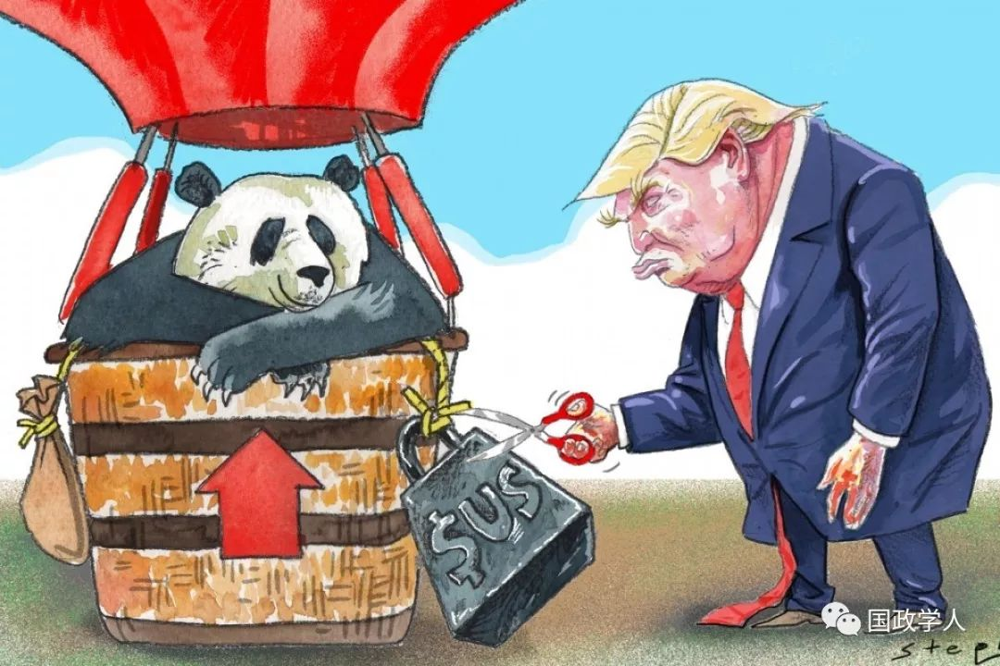

收录于合集
以下文章来源于国际关系预测 ，作者尚道国际资讯
 国际关系预测 .
“南大战略研究”为南京大学历史学院“国际战略与安全研究中心”授权公众号，推广和发布南京大学国际战略与安全研究相关学术成果。

简 介
【作者】 Simon Lester是卡托贸易政策研究中心的副主任。主要研究方向为WTO争端、区域贸易协定、变相保护主义和国际贸易法史。
【来源】 2019年5月30日的福克斯新闻频道
【编译】 尚道国际资讯

特朗普总统似乎认为他正在与中国进行一场强硬的谈判战，而强硬是这场谈判中最为重要的部分。今早特朗普在推特上的痛骂包括针对中国的尖刻言辞，使他得到了两党议员的支持。参议院少数党领袖、纽约州民主党参议员查克·舒默（ Chuck Schumer）敦促特朗普“对中国要强硬”，因为“实力是取胜的唯一手段”。南卡罗来纳州共和党参议员林赛·格雷厄姆（Lindsey Graham）更加直接地向特朗普喊出“我们支持你!”的口号。
强硬的态度有利有弊。智多星布奇与太阳舞小子（美国电影《虎豹小霸王》的主角）主动现身朝向包围他们的玻利维亚士兵开枪时，他们的态度非常强硬。但有时候，明智的策略比强硬的策略更好。
然而，特朗普在对待中美贸易问题上的强硬方式可能不会奏效。特朗普的对华策略完全依赖于单边关税，因此，达成的任何协议都不会是最好的。国会议员们不应力劝特朗普拿出强硬立场，而应该提出一种更有效的策略:与盟友合作对中国施加更大的压力。
各国普遍认为中国采取了保护主义和其他有问题的贸易做法：未能充分保护知识产权；高关税；限制外国投资；迫使外国投资者将技术转让给合资伙伴；工业补贴；国有企业的不公平竞争；以及用于歧视外国公司的不透明监管方式。
现在唯一的争论是面对中国的这种贸易做法美国政府应该怎么做。特朗普政府选择单干，以违反世界贸易组织规则的方式对中国征收关税。在特朗普政府看来，这些关税“迫使中国坐到谈判桌前”，但这是一种误解，因为奥巴马政府时期就已经与中国进行过投资谈判（特朗普政府似乎已经放弃了该谈判）。
到目前为止，特朗普征收关税的唯一结果是使双方经济痛苦，中国以增加进口关税作为对美国单边关税的报复，这迫使两国的消费者支付更高的价格，两国的出口生产商由于处于劣势而蒙受巨大的损失。
特朗普政府已经让华盛顿相信，关税是最后的手段，其他任何手段都无法对中国起作用。但特朗普政府的这种说法是错误的。事实上，还有更好的选择。
在策略上的第一个重要转变是通过国家间协调一致的努力对抗中国。欧洲、加拿大、墨西哥、日本、巴西和其他许多国家都对中国的贸易行为表示担忧。特朗普政府应该与这些盟友接触并进行合作。
这一协调努力的关键部分是美国政府取消《贸易扩展法》第232条款对这些盟国征收的关税和配额。第232条款表面上是为了实现“国家安全”，但被普遍认为是简单的保护主义。当我们在贸易问题上攻击其他国家时，这些国家不太愿意与我们合作解决与中国的问题。虽然特朗普政府已经取消了对加拿大和墨西哥进口商品的关税，但对其他国家的关税仍然存在。
美国政府在组织此次集体行动之后，应该与其盟友采取双管齐下的做法：根据适用于中国的各项条款向世贸组织投诉中国（根据中国加入世贸组织的条款，中国承担的义务大于大多数国家），并在多边协议中与中国谈判新的协议。
谈判中的一个重要部分是美国及其盟友必须愿意做出一些让步。任何一个国家都很难接受单方面的协议，考虑到中国与西方国家签订不平等贸易条约的历史，中国肯定也是如此。例如，作为中国降低关税的交换条件，美国及其盟友可以同意放弃对中国和其他几个国家征收反倾销税时采用的特殊、繁琐的计算方法。
除了与中国谈判，美国还应该与贸易伙伴进行直接地贸易自由化谈判，而由此产生的特惠贸易安排将使中国处于不利地位，并对其施加压力，要求中国实现自由化。单边关税导致了中国将提高关税作为回应，但关税自由化可能会给中国施加压力，迫使其追求自身的自由化，以免处于不利地位。
奥巴马政府参与的《跨太平洋伙伴关系协定》（Trans-PacificPartnership）和《跨大西洋贸易与投资伙伴关系协定》（Trans- Atlantic Trade andInvestment Partnership）就是这样的例子。然而，到目前为止，特朗普政府主要是在调整现有的贸易协定，强调这类新的自由化将有其自身的好处，并且有助于鼓励与中国达成协议。如果这些方法都不管用，那么强硬的策略——统一战线对中国征收新关税，或者讨论中国是否属于WTO——是合适的。但特朗普政府的做法忽视或破坏了这些更明智的选择。策略转变的第一步就是放弃目前有缺陷的做法，这种做法只会导致双方都征收关税。
推动中国继续改革是有可能的。想想自1978年以来中国取得的进步。但是，如果美国的贸易政策是对所有美国贸易伙伴征收关税，把我们的盟友变成敌人，中国的改革就不会发生。
_ ** _ 本文由尚道国际资讯联合国政学人组织编译**
更多阅读
【重磅速递】约瑟夫·奈：美国霸权的兴衰：从威尔逊到特朗普 | 国政学人
【重磅推荐】巴里·布赞：英国学派视角下的中国崛起 | 国政学人
【重磅速递】米尔斯海默：注定失败：自由主义国际秩序的兴衰 | 国政学人
【国际组织】IO杂志：联合国维和行动的武力运用问题研究 | 国政学人
【国际秩序】为什么自由主义国际秩序理念将美国外交政策引入歧途？| 国政学人
【关系理论】“关系”：世界政治关系理论的中国话语 | 国政学人
【百年国关】历史在国际社会中的应用：从巴黎和会到现在 | 国政学人
【英国学派】张勇进：中国与全球国际社会中的自由主义等级制：实力与对规范变迁的协商 | 国政学人
【地区秩序】论经济实力的可转化性：中国经济崛起与东亚安全秩序 | 国政学人